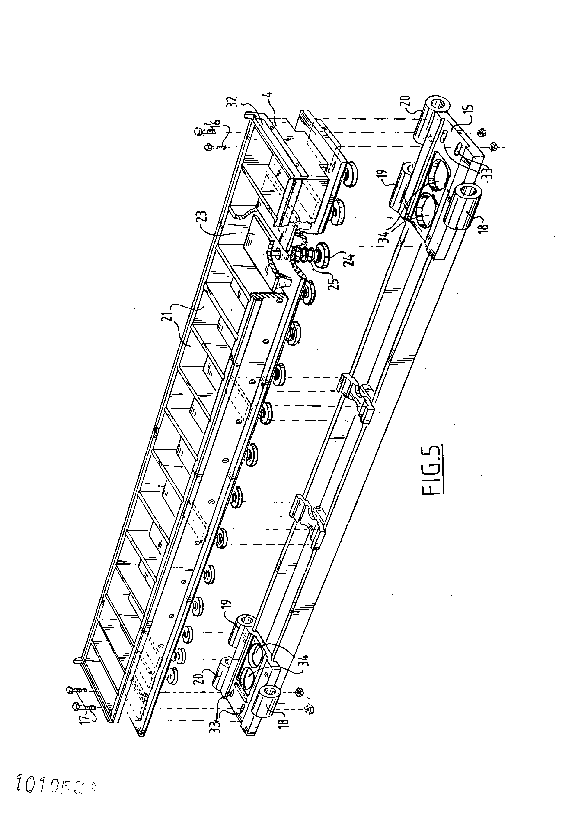
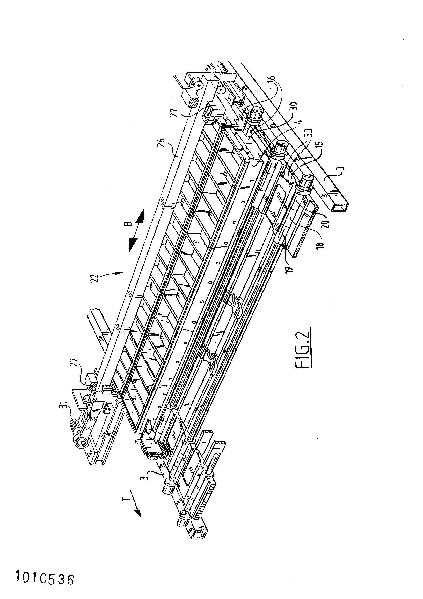

<!--
@license
Copyright (c) 2016 The Polymer Project Authors. All rights reserved.
This code may only be used under the BSD style license found at http://polymer.github.io/LICENSE.txt
The complete set of authors may be found at http://polymer.github.io/AUTHORS.txt
The complete set of contributors may be found at http://polymer.github.io/CONTRIBUTORS.txt
Code distributed by Google as part of the polymer project is also
subject to an additional IP rights grant found at http://polymer.github.io/PATENTS.txt
-->

<link rel="import" href="../bower_components/polymer/polymer-element.html">
<link rel="import" href="../bower_components/app-layout/app-drawer/app-drawer.html">
<link rel="import" href="../bower_components/app-layout/app-drawer-layout/app-drawer-layout.html">
<link rel="import" href="../bower_components/app-layout/app-header/app-header.html">
<link rel="import" href="../bower_components/app-layout/app-header-layout/app-header-layout.html">
<link rel="import" href="../bower_components/app-layout/app-scroll-effects/app-scroll-effects.html">
<link rel="import" href="../bower_components/app-layout/app-toolbar/app-toolbar.html">
<link rel="import" href="../bower_components/app-route/app-location.html">
<link rel="import" href="../bower_components/app-route/app-route.html">
<link rel="import" href="../bower_components/iron-pages/iron-pages.html">
<link rel="import" href="../bower_components/iron-selector/iron-selector.html">
<link rel="import" href="../bower_components/paper-icon-button/paper-icon-button.html">
<link rel="import" href="../bower_components/paper-item/paper-item.html">
<link rel="import" href="../bower_components/paper-item/paper-icon-item.html">
<link rel="import" href="../bower_components/iron-icons/iron-icons.html">
<link rel="import" href="../bower_components/iron-icons/av-icons.html">
<link rel="import" href="../bower_components/iron-icons/image-icons.html">
<link rel="import" href="../bower_components/iron-flex-layout/iron-flex-layout-classes.html">
<link rel="import" href="my-icons.html">

<link rel="import" href="my-image-carousel-custom-styles.html">
<link rel="import" href="my-image-carousel-shared-styles.html">
<link rel="import" href="my-show-git-custom-styles.html">
<link rel="import" href="my-paper-icon-button-custom-styles.html">
<!--link rel="stylesheet" href="my-image-carousel.css"-->


<link rel="lazy-import" href="my-home.html">
<link rel="lazy-import" href="my-view2.html">
<link rel="lazy-import" href="my-view3.html">
<link rel="lazy-import" href="my-new-view.html">
<link rel="lazy-import" href="my-image-carousel.html">
<link rel="lazy-import" href="my-show-git-repositories.html">
<link rel="lazy-import" href="my-view404.html">


<dom-module id="my-app">
  <template>
    <style>
      :host {
        --app-primary-color: #acacac;
        --app-secondary-color: #3c3c3c;
        --app-toolbar-font-size: 25px;
        --app-drawer-width: 300px;
        display: block;
      }

      app-drawer-layout:not([narrow]) [drawer-toggle] {
        display: none;
      }

      app-header {
        color: #fff;
        background-color: var(--app-primary-color);
      }

      app-header paper-icon-button {
        --paper-icon-button-ink-color: white;
      }

      .drawer-list {
        margin: 0 20px;
      }

      .drawer-list a {
        display: block;
        padding: 0;
        /* padding: 0 16px; */
        text-decoration: none;
        color: var(--app-secondary-color);
        line-height: 40px;
      }

      .drawer-list a.iron-selected {
        /* color: black; */
        font-weight: bold;
      }

      paper-icon-button[hidden] {
        display: none;
      }

      span {
        margin:  0px 16px;
      }

    </style>

    <!--  include custom style   -->
    <custome-style>
        <style include="my-image-carousel-custom-styles"></style>
        <style include="my-show-git-custom-styles"></style>
        <style include="my-paper-icon-button-custom-styles"></style>
        <style  include="iron-flex iron-flex-alignment"></style>
    </custom-style>

        <!--*  my-image-carousel style
            Important for Performance
        */ -->
    <style  include="my-image-carousel-shared-styles"></style>>

    <app-location route="{{route}}"></app-location>
    <app-route
        route="{{route}}"
        pattern="[[rootPattern]]:page"
        data="{{routeData}}"
        tail="{{subroute}}"></app-route>

    <app-drawer-layout fullbleed drawer-width="288px" responsive-width="1288px" >


      <!-- Drawer content -->
      <app-drawer id="drawer" slot="drawer">
        <app-toolbar>Menu</app-toolbar>
        <iron-selector selected="[[page]]" attr-for-selected="name" class="drawer-list horizontal-layout" role="navigation">
          <a name="home" href="home"><paper-icon-item role="option" tabindex="0" aria-disable="false"><iron-icon icon="home" class="medium"></iron-icon><span>Home</span></paper-icon-item></a>
          <a name="image-carousel" href="image-carousel"><paper-icon-item role="option" tabindex="0" aria-disable="false"><iron-icon icon="image:collections" class="medium"></iron-icon><span>Image Carousel</span></paper-icon-item></a>
          <a name="show-git-repositories" href="show-git-repositories"><paper-icon-item role="option" tabindex="0" aria-disable="false"><iron-icon icon="av:web-asset" class="medium"></iron-icon><span>Show Git repositories</span></paper-icon-item></a>

          <!--a name="home" href="home"><iron-icon icon="home" class="medium"></iron-icon><span>Home</home></a>
          <a name="image-carousel" href="image-carousel"><iron-icon icon="image:collections" class="medium"></iron-icon><span>Image Carousel</span></a>
          <a name="show-git-repositories" href="show-git-repositories"><iron-icon icon="av:web-asset" class="medium"></iron-icon><span>Show Git repositories</span></a-->
          <a name="view2" href="view2"><iron-icon icon="done"></iron-icon><span>View Two</span></a>
          <a name="view3" href="view3"><iron-icon icon="done"></iron-icon><span>View Three</span></a>
          <a name="new-view" href="new-view"><iron-icon icon="done"></iron-icon><span>New View</span></a>
        </iron-selector>
      </app-drawer>

      <!-- Main content -->
      <app-header-layout has-scrolling-region>

        <app-header slot="header" condenses reveals effects="waterfall">
          <app-toolbar>
            <paper-icon-button icon="my-icons:menu" drawer-toggle></paper-icon-button>
            <div main-title> Web components is awesome </div>
          </app-toolbar>
        </app-header>

        <iron-pages
            selected="[[page]]"
            attr-for-selected="name"
            fallback-selection="view404"
            role="main">
          <my-home name="home"></my-home>
          <my-image-carousel name="image-carousel" autoscroll appendimage  int=250 actions max=12000>
              <!--img data-src="https://app-layout-assets.appspot.com/assets/bg1.jpg"-->
              
              
              
          </my-image-carousel>

          <my-show-git-repositories name="show-git-repositories"> user="PaulMatencio"</my-show-git-repositories>

          <my-view2 name="view2"></my-view2>
          <my-view3 name="view3"></my-view3>
          <my-new-view name="new-view"></my-new-view>
          <my-view404 name="view404"></my-view404>
        </iron-pages>
      </app-header-layout>
    </app-drawer-layout>
  </template>

  <script>
    class MyApp extends Polymer.Element {

      static get is() { return 'my-app'; }

      static get properties() {
        return {
          page: {
            type: String,
            reflectToAttribute: true,
            observer: '_pageChanged',
          },
          rootPattern: String,
          routeData: Object,
          subroute: String,
        };
      }

      static get observers() {
        return [
          '_routePageChanged(routeData.page)',
        ];
      }

      constructor() {
        super();

        // Get root pattern for app-route, for more info about `rootPath` see:
        // https://www.polymer-project.org/2.0/docs/upgrade#urls-in-templates
        this.rootPattern = (new URL(this.rootPath)).pathname;
      }

       ready() {
         super.ready();
         console.log("git ready");
       }

      _routePageChanged(page) {
        // Polymer 2.0 will call with `undefined` on initialization.
        // Ignore until we are properly called with a string.
        if (page === undefined) {
          return;
        }

        // If no page was found in the route data, page will be an empty string.
        // Deault to 'home' in that case.
        this.page = page || 'home';

        // Close a non-persistent drawer when the page & route are changed.
        if (!this.$.drawer.persistent) {
          this.$.drawer.close();
        }
      }

      _pageChanged(page) {
        // Load page import on demand. Show 404 page if fails

        var resolvedPageUrl = this.resolveUrl('my-' + page + '.html');
        console.log (resolvedPageUrl);
        Polymer.importHref(
            resolvedPageUrl,
            null,
            this._showPage404.bind(this),
            true);
      }

      _showPage404() {
        this.page = 'view404';
      }
    }
    window.customElements.define(MyApp.is, MyApp);
    console.log(MyApp) ;
  </script>
</dom-module>
